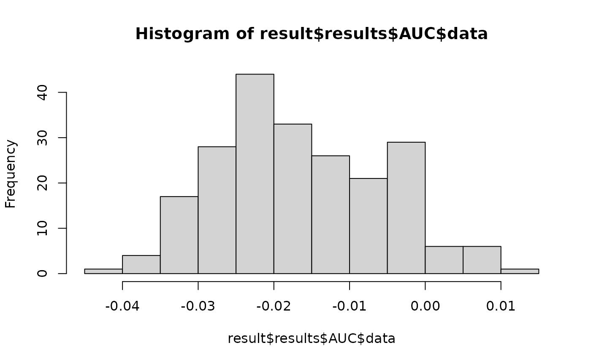
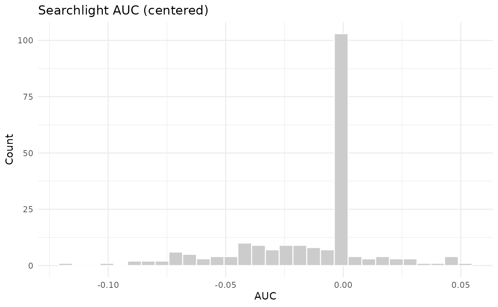

Searchlight Analysis
Bradley Buchsbaum
2025-02-13
Searchlight_Analysis.RmdSearchlight Analysis
Generate a volumetric dataset with 100 observations and two classes
To generate a dataset we use the gen_sample_dataset
function. We are creating a 4-dimensional neuroimaging dataset, with
6-by-6-by-6 spatial dimensions and 80 observations in the 4th dimension.
These 80 observations are divided into 4 blocks, each consisting of 20
trials. The generated y variable is a factor
with 2 levels (‘a’ and ‘b’). the gen_sample_dataset
function creates a list with two elements: an mvpa_dataset
object (dataset) and an mvpa_design object
(design). The first contains information about the data
itself and the second contains information about the experimental
design.
dataset <- gen_sample_dataset(D=c(6,6,6), nobs = 80, blocks=4, nlevels=2)
print(dataset)## $dataset
##
## █▀▀ MVPA Dataset ▀▀█
##
## ├─ Training Data
## │ ├─ Dimensions: 6 × 6 × 6 × 80 observations
## │ └─ Type: DenseNeuroVec
## ├─ Test Data
## │ └─ None
## └─ Mask Information
## ├─ Areas: 1 : 120
## └─ Active voxels/vertices: 120
##
##
## $design
##
## █▀▀ MVPA Design ▀▀█
##
## ├─ Training Data
## │ ├─ Observations: 80
## │ ├─ Response Type: Factor
## │ ├─ Levels: a, b
## │ └─ Class Distribution: a: 40, b: 40
## ├─ Test Data
## │ └─ None
## └─ Structure
## ├─ Blocking: Present
## ├─ Number of Blocks: 4
## ├─ Mean Block Size: 20 (SD: 0 )
## └─ Split Groups: NoneCreate a cross-validation object using a pre-defined blocking variable.
Most MVPA analyses involve the collection of fMRI data over a series
of scanning runs, or “blocks”. Due to intra-block serial correlations,
it makes sense to take advantage of this block structure for
cross-validation. In other words, we want to train the classifier on
k-1 blocks and test on the set of trials for all
k held out blocks. This is a form of leave-one-group-out
cross-validation, which is encapsulated in the
blocked_cross_validation function.
block <- dataset$design$block_var
crossval <- blocked_cross_validation(block)
crossval##
## █▀▀ Blocked Cross-Validation ▀▀█
##
## ├─ Dataset Information
## │ ├─ Observations: 80
## │ └─ Number of Folds: 4
## └─ Block Information
## ├─ Total Blocks: 4
## ├─ Mean Block Size: 20 (SD: 0 )
## └─ Block Sizes: 1: 20, 2: 20, 3: 20, 4: 20Construct an mvpa_model object with a Shrinkage
Discriminant Analysis classifier (sda_notune)
The “sda_notune” model is an sda model where the
lambda parameter is estimated from the training data. See
documentation in the sda
package package.
sda_model <- load_model("sda_notune")
model <- mvpa_model(model=sda_model, dataset=dataset$dataset, design=dataset$design, crossval=crossval)
model## mvpa_model object.
## model: sda_notune
## model type: classification
##
## █▀▀ Blocked Cross-Validation ▀▀█
##
## ├─ Dataset Information
## │ ├─ Observations: 80
## │ └─ Number of Folds: 4
## └─ Block Information
## ├─ Total Blocks: 4
## ├─ Mean Block Size: 20 (SD: 0 )
## └─ Block Sizes: 1: 20, 2: 20, 3: 20, 4: 20
##
##
## █▀▀ MVPA Dataset ▀▀█
##
## ├─ Training Data
## │ ├─ Dimensions: 6 × 6 × 6 × 80 observations
## │ └─ Type: DenseNeuroVec
## ├─ Test Data
## │ └─ None
## └─ Mask Information
## ├─ Areas: 1 : 120
## └─ Active voxels/vertices: 120
##
##
## █▀▀ MVPA Design ▀▀█
##
## ├─ Training Data
## │ ├─ Observations: 80
## │ ├─ Response Type: Factor
## │ ├─ Levels: a, b
## │ └─ Class Distribution: a: 40, b: 40
## ├─ Test Data
## │ └─ None
## └─ Structure
## ├─ Blocking: Present
## ├─ Number of Blocks: 4
## ├─ Mean Block Size: 20 (SD: 0 )
## └─ Split Groups: NoneRun a standard searchlight analysis
The output of run_searchlight is a list of image volumes
containing performance measures for each spherical searchlight. For a
two-class classification problem, there are three output measures:
Accuracy and AUC (AUC has .5
subtracted from it, so that it is centered at 0 rather than .5).
Accuracy is the raw cross-validated accuracy measure for
each centroid and AUC is the area under the curve
statistic. The radius argument indicates the radius in
mm of the spherical searchlight. Finally,
method indicates the searchlight scheme, which can be
standard or randomized. See below for more
information about the randomized searchlight.
result <- run_searchlight(model, radius=4, method="standard")## INFO [2025-02-13 23:41:34] Running standard searchlight with radius = 4
## INFO [2025-02-13 23:41:34] creating standard searchlight
## INFO [2025-02-13 23:41:34] running standard searchlight iterator
## INFO [2025-02-13 23:41:34] ⚡ Processing batch 1/10
## INFO [2025-02-13 23:41:35] ⚡ Processing batch 2/10
## INFO [2025-02-13 23:41:36] ⚡ Processing batch 3/10
## INFO [2025-02-13 23:41:37] ⚡ Processing batch 4/10
## INFO [2025-02-13 23:41:38] ⚡ Processing batch 5/10
## INFO [2025-02-13 23:41:40] ⚡ Processing batch 6/10
## INFO [2025-02-13 23:41:41] ⚡ Processing batch 7/10
## INFO [2025-02-13 23:41:42] ⚡ Processing batch 8/10
## INFO [2025-02-13 23:41:43] ⚡ Processing batch 9/10
## INFO [2025-02-13 23:41:44] ⚡ Processing batch 10/10
## INFO [2025-02-13 23:41:45]
## ✨ MVPA Iteration Complete
## ├─ Total ROIs: 120
## ├─ Processed: 120
## └─ Skipped: 0
result##
## █▀▀ Searchlight Analysis Results ▀▀█
##
## ├─ Coverage
## │ ├─ Total Voxels: 216
## │ └─ Active Voxels: 120
## └─ Performance Metrics
## ├─ Accuracy
## │ ├─ Mean: 0.4898
## │ ├─ SD: 0.0083
## │ ├─ Min: 0.4679
## │ └─ Max: 0.5118
## ├─ AUC
## │ ├─ Mean: -0.0168
## │ ├─ SD: 0.0109
## │ ├─ Min: -0.0437
## │ └─ Max: 0.0140
hist(result$results$AUC$data)
Run a randomized searchlight analysis
A randomized searchlight analysis is an iterative procedure in which
searchlight regions are sampled without replacement from the
voxel set. A classification analysis is run for each region, and the
result is recorded for the center voxel and all other voxels in the
region. This is done for each of niter times, where
each iteration involves an exhaustive sampling of the voxel set. The
performance at each voxel is the average performance for the set of
analyses in which the given voxel was included as a feature. The result
will be similar to the standard searchlight procedure, but emphasizes
the contribution of a given voxel across different local contexts to
classification performance. This should in principle offer slightly
better spatial localization than the standard searchlight. The
randomized searchlight procedure can also be faster, because the total
number of estimated models is a function of
nvoxels/radius * niter, which will be smaller than
nvoxels for many choices of radius and
niter.
result <- run_searchlight(model, radius=4, method="randomized", niter=8)## INFO [2025-02-13 23:41:45] Running randomized searchlight with radius = 4 and niter = 8
## INFO [2025-02-13 23:41:45] searchlight iteration: 1
## INFO [2025-02-13 23:41:45] ⚡ Processing batch 1/3
## INFO [2025-02-13 23:41:45] ⚡ Processing batch 2/3
## INFO [2025-02-13 23:41:45] ⚡ Processing batch 3/3
## INFO [2025-02-13 23:41:45]
## ✨ MVPA Iteration Complete
## ├─ Total ROIs: 3
## ├─ Processed: 3
## └─ Skipped: 0
## INFO [2025-02-13 23:41:45] searchlight iteration: 2
## INFO [2025-02-13 23:41:45] ⚡ Processing batch 1/3
## INFO [2025-02-13 23:41:45] ⚡ Processing batch 2/3
## INFO [2025-02-13 23:41:46] ⚡ Processing batch 3/3
## INFO [2025-02-13 23:41:46]
## ✨ MVPA Iteration Complete
## ├─ Total ROIs: 3
## ├─ Processed: 3
## └─ Skipped: 0
## INFO [2025-02-13 23:41:46] searchlight iteration: 3
## INFO [2025-02-13 23:41:46] ⚡ Processing batch 1/3
## INFO [2025-02-13 23:41:46] ⚡ Processing batch 2/3
## INFO [2025-02-13 23:41:46] ⚡ Processing batch 3/3
## INFO [2025-02-13 23:41:46]
## ✨ MVPA Iteration Complete
## ├─ Total ROIs: 3
## ├─ Processed: 3
## └─ Skipped: 0
## INFO [2025-02-13 23:41:46] searchlight iteration: 4
## INFO [2025-02-13 23:41:46] ⚡ Processing batch 1/4
## INFO [2025-02-13 23:41:46] ⚡ Processing batch 2/4
## INFO [2025-02-13 23:41:46] ⚡ Processing batch 3/4
## INFO [2025-02-13 23:41:47] ⚡ Processing batch 4/4
## INFO [2025-02-13 23:41:47]
## ✨ MVPA Iteration Complete
## ├─ Total ROIs: 4
## ├─ Processed: 4
## └─ Skipped: 0
## INFO [2025-02-13 23:41:47] searchlight iteration: 5
## INFO [2025-02-13 23:41:47] ⚡ Processing batch 1/3
## INFO [2025-02-13 23:41:47] ⚡ Processing batch 2/3
## INFO [2025-02-13 23:41:47] ⚡ Processing batch 3/3
## INFO [2025-02-13 23:41:47]
## ✨ MVPA Iteration Complete
## ├─ Total ROIs: 3
## ├─ Processed: 3
## └─ Skipped: 0
## INFO [2025-02-13 23:41:47] searchlight iteration: 6
## INFO [2025-02-13 23:41:47] ⚡ Processing batch 1/2
## INFO [2025-02-13 23:41:47] ⚡ Processing batch 2/2
## INFO [2025-02-13 23:41:48]
## ✨ MVPA Iteration Complete
## ├─ Total ROIs: 2
## ├─ Processed: 2
## └─ Skipped: 0
## INFO [2025-02-13 23:41:48] searchlight iteration: 7
## INFO [2025-02-13 23:41:48] ⚡ Processing batch 1/3
## INFO [2025-02-13 23:41:48] ⚡ Processing batch 2/3
## INFO [2025-02-13 23:41:48] ⚡ Processing batch 3/3
## INFO [2025-02-13 23:41:48]
## ✨ MVPA Iteration Complete
## ├─ Total ROIs: 3
## ├─ Processed: 3
## └─ Skipped: 0
## INFO [2025-02-13 23:41:48] searchlight iteration: 8
## INFO [2025-02-13 23:41:48] ⚡ Processing batch 1/3
## INFO [2025-02-13 23:41:48] ⚡ Processing batch 2/3
## INFO [2025-02-13 23:41:48] ⚡ Processing batch 3/3
## INFO [2025-02-13 23:41:49]
## ✨ MVPA Iteration Complete
## ├─ Total ROIs: 3
## ├─ Processed: 3
## └─ Skipped: 0
## INFO [2025-02-13 23:41:49] number of models fit: 24
result##
## █▀▀ Searchlight Analysis Results ▀▀█
##
## ├─ Coverage
## │ ├─ Total Voxels: 216
## │ └─ Active Voxels: 120
## └─ Performance Metrics
## ├─ Accuracy
## │ ├─ Mean: 0.4775
## │ ├─ SD: 0.0319
## │ ├─ Min: 0.4094
## │ └─ Max: 0.5234
## ├─ AUC
## │ ├─ Mean: -0.0331
## │ ├─ SD: 0.0429
## │ ├─ Min: -0.1187
## │ └─ Max: 0.0331
hist(result$results$AUC$data)
Using different classifiers
All of the classifiers available in the caret package
can be used (in theory) for a searchlight analysis. For example, we can
run an analysis using a linear support vector (svmLinear)
machine as follows:
svm_model <- load_model("svmLinear")
model <- mvpa_model(model=svm_model, dataset=dataset$dataset, design=dataset$design, crossval=crossval)
result_svm <- run_searchlight(model, radius=4, method="randomized", niter=2)Here we use a random forest classifier. To fix the tuning parameter
mtry at a known value, we supply a tune_grid
argument to the mvpa_model function. Here, we set
mtry to 2. Sinc ethere is only one value, it
means that this parameter will be fixed. If we supply a grid of values,
then the paramter will be tuned for each searchlight sample. Since
parameter tuning is costly in terms of computing time, this is not a
recommended approach unless one has a great deal of computing power or
one is running the searchlight over a small mask.
rf_model <- load_model("rf")
model <- mvpa_model(model=rf_model, dataset=dataset$dataset, design=dataset$design, crossval=crossval, tune_grid=data.frame(mtry=2))
result_rf <- run_searchlight(model, radius=4, method="randomized", niter=2)## INFO [2025-02-13 23:41:49] Running randomized searchlight with radius = 4 and niter = 2
## INFO [2025-02-13 23:41:49] searchlight iteration: 1
## INFO [2025-02-13 23:41:49] ⚡ Processing batch 1/2
## INFO [2025-02-13 23:41:49] ⚡ Processing batch 2/2
## INFO [2025-02-13 23:41:50]
## ✨ MVPA Iteration Complete
## ├─ Total ROIs: 2
## ├─ Processed: 2
## └─ Skipped: 0
## INFO [2025-02-13 23:41:50] searchlight iteration: 2
## INFO [2025-02-13 23:41:50] ⚡ Processing batch 1/2
## INFO [2025-02-13 23:41:50] ⚡ Processing batch 2/2
## INFO [2025-02-13 23:41:50]
## ✨ MVPA Iteration Complete
## ├─ Total ROIs: 2
## ├─ Processed: 2
## └─ Skipped: 0
## INFO [2025-02-13 23:41:50] number of models fit: 4Here we specify a range of values for the mtry tuning
parameter. In this case, by supplying the tune_reps
argument to mvpa_model we control the number of resamples
used to tune the model parameters. The default is 10, but here we speed
up execution time by reducing it to 2. In general, more resamples are
required to reliably estimate optimal tuning parameters. This means for
a whole-brain searchlight, parameter tuning is
generally impractical. This is why the classifier
sda_notune is a good choice for searchlight analyses, since
it “works well” with default tuning parameters.
grid <- data.frame(mtry=c(2,4,6,8))
model2 <- mvpa_model(model=rf_model, dataset=dataset$dataset, design=dataset$design, crossval=crossval, tune_grid=grid, tune_reps=2)
result_rf_tuned <- run_searchlight(model2, radius=6, method="randomized", niter=1)